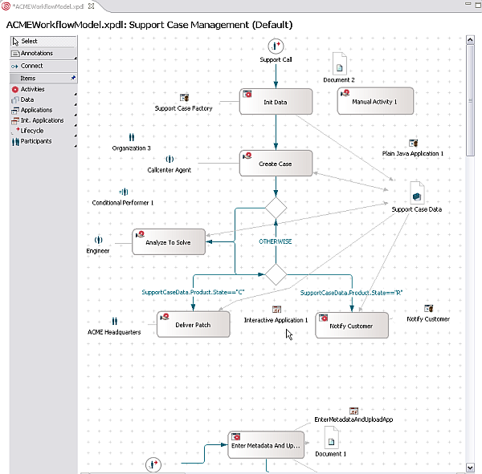
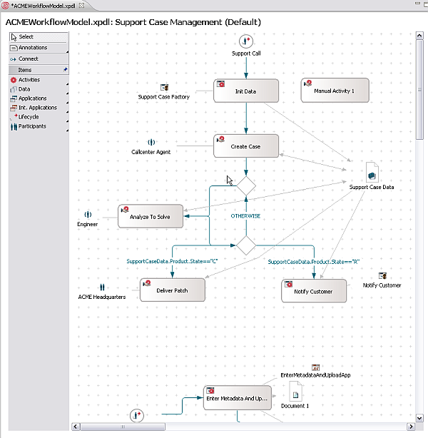
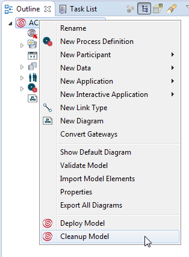
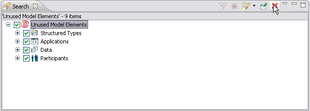
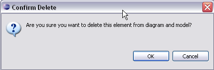

As models become older, the changes from version to version often leave behind a lot of garbage in the form of old data objects or applications that are not used anymore. Usually they are kept, because nobody finds the time to verify if they can be deleted safely.
Although the unused elements won't crash the Eclipse, they may carry other overload like java classes, configuration data, strings and other data types associated with them. By cleaning up, you will increase the overall speed and efficiency of the model. It would also mean that you are viewing the most recent version of the model excluding the old garbage.
The cleanup process searches for type declarations, data, participants and applications that are unused. It doesn't check if that model element has symbols or not. It verifies that every element has a reference. It also doesn't check for administrator and predefined data (It is always retained).

Figure: Original Model with unused Elements

Figure: The Model after Cleanup

Figure: Select Cleanup Option

Figure: Select Cleanup Option

Figure: Confirm Cleanup Option